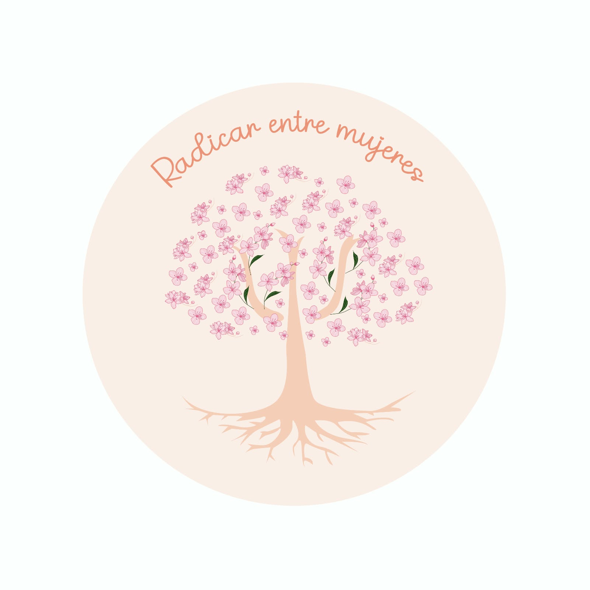

Regresa a tu centro desde el buentrato y la ternura
Espacio psicoterapéutico especializado en acompañar a mujeres adultas a sanar patrones, comprender sus emociones y construir una relación respetuosa y amorosa consigo mismas.

Modalidad Virtual
Atención a mujeres adultas
Perspectiva Feminista
Acompañamiento seguro

Hola, soy la Psic. Brianda Isaen Estrada Vargas
Licenciada en Psicología por la UNAM (FES Iztacala) y Especialista en Terapia de Esquema por el Instituto Mexicano de Terapia de Esquemas (IMTE).
Soy una mujer mexicana, psicóloga y feminista, amante de la naturaleza y el equilibrio. Mi vocación está dedicada al trabajo por y para las mujeres, brindando un acompañamiento empático desde el buentrato y la ternura para guiarlas a regresar a su centro.
- ✓ Licenciada en Psicología — FES Iztacala, UNAM
- ✓ Especialidad en Terapia de Esquemas — IMTE
- ✓ Diplomada en Terapia Cognitivo Conductual — IMPCC
- ✓ Gestora del proyecto Abrazarte y colaboradora en Psicovioleta
Especialidades Terapéuticas
Herramientas y acompañamiento para tu salud mental desde un espacio humano y libre de juicio.
Terapia de Esquemas
Identifica y transforma patrones emocionales profundos y necesidades infantiles no cubiertas para sanar el presente.
Terapia Cognitivo-Conductual
Reestructuración de pensamientos limitantes, manejo del estrés y herramientas prácticas cotidianas.
Acompañamiento a Mujeres
Espacio de contención amorosa para procesos de autoconocimiento, fortalecimiento emocional y límites sanos.
Psicoeducación y Buentrato
Aprende a relacionarte con tus emociones desde la ternura, reduciendo la autoexigencia y el juicio.
¿Cómo es el proceso terapéutico?
Un camino guiado hacia el autodescubrimiento y la regulación emocional.
Contacto Inicial
Coordinamos tu sesión a través de WhatsApp para resolver tus dudas y agendar tu horario en modalidad virtual.
Valoración de Esquemas
Exploramos tus necesidades emocionales, modos de afrontamiento e historia de vida sin juzgarte.
Crecimiento y Sanación
Desarrollamos herramientas prácticas para sanar heridas, establecer límites y vivir en mayor serenidad.
Experiencias de acompañamiento
Lo que expresan las mujeres que han formado parte de este espacio.
"Trabajar la Terapia de Esquemas con Brianda me permitió entender por qué reaccionaba de ciertas formas. Su empatía y ternura hacen que te sientas segura."
"Un espacio verdaderamente seguro. Aprendí a tratarme con buentrato y a poner límites sin culpa."
"Las sesiones virtuales son súper profesionales y cálidas. Me ayudaron a regresar a mi centro en momentos muy difíciles."